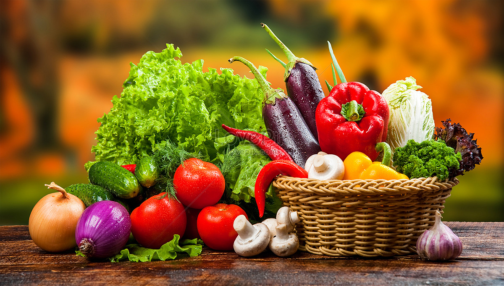

Planting Season: Vegetables usually have specific growing seasons. Warm-season veggies (like tomatoes and peppers) should be planted after the last frost, while cool-season veggies (like lettuce and carrots) can be planted in early spring or late fall.
Soil: Vegetables thrive in nutrient-rich, well-draining soil. Add compost or fertilizer for better yields.
Spacing: Follow specific spacing requirements for each vegetable to allow airflow and prevent overcrowding.
Watering: Most vegetables need consistent watering. Aim to keep the soil evenly moist, especially during dry spells.

Fruits
Planting Season: Plant fruit-bearing plants based on their requirements; for example, strawberries do well in early spring, while melons prefer warmer soil.